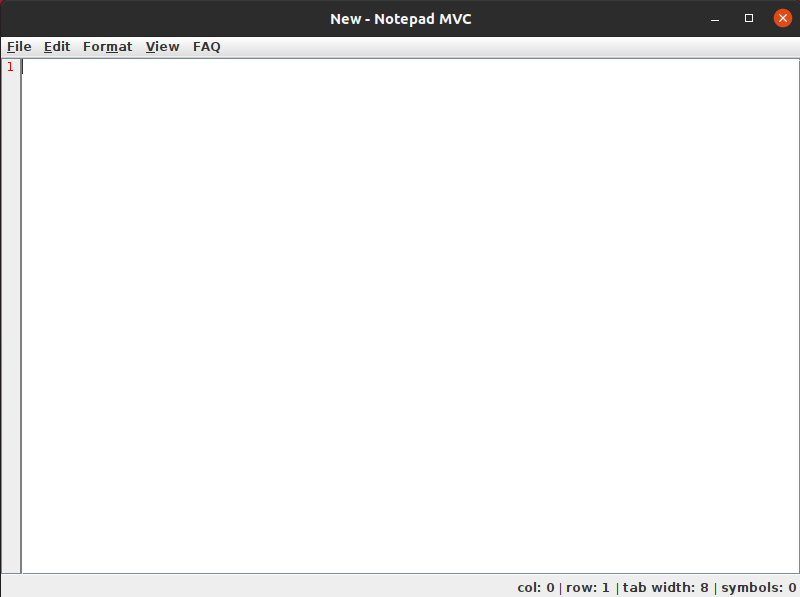

Welcome to the NotepadMVC help guide. For a quick introduction into both NotepadMVC's most basic features, as well as some advanced keyboard shortcuts, visit the Get started with gedit and Shortcut keys topics.
Other help topics are grouped together into sections below. Enjoy using NotepadMVC!
NotepadMVC is a simple text editor. You can use it to prepare simple notes and documents, or you can use some of its advanced features, making it your own software development environment.
Once NotepadMVC launches, you can start writing right away. To save your text, just click the Save icon in the NotepadMVC toolbar.
Use shortcut keys to perform common tasks more quickly than with the mouse and menus. The following tables list all of NotepadMVC's shortcut keys.
| Action | Keyboard shortcut |
|---|---|
| Create a new document | Ctrl + N |
| Open a document | Ctrl + O |
| Save the current document | Ctrl + S |
| Save the current document with a new filename | Shift + S |
| Print the current document | Ctrl + P |
| Quit NotepadMVC | Ctrl + Q |
| Action | Keyboard shortcut |
|---|---|
| Undo the last action | Ctrl + Z |
| Cut the selected text or region and place it on the clipboard | Ctrl + X |
| Copy the selected text or region onto the clipboard | Ctrl + C |
| Paste the contents of the clipboard | Ctrl + V |
| Select all text in the file | Ctrl + A |
| Delete the selected text or region | Delete |
| Action | Keyboard shortcut |
|---|---|
| Find a string | Ctrl + F |
| Find the next instance of the string | F3 |
| Search and Replace | Ctrl + H |
| Goto line | Ctrl + G |
| Paste current time and date | F5 |
| Action | Keyboard shortcut |
|---|---|
| Open the gedit user guide | F1 |
| About NotepadMVC version | F2 |
The easiest way to create a new file in NotepadMVC, is to click the Create a new document button on the the toolbar, or press Ctrl + T.
Any one of these actions will create a new file in the NotepadMVC window.
To open a file in NotepadMVC, click the Open button, or press Ctrl + O.
This will cause the Open dialog to appear. Use your mouse or keyboard to select the file that you wish to open, and then click Open. The file that you've selected will open.
To close the Open dialog without opening a file, click Cancel.
To save a file in NotepadMVC, click on the Save button on the right side of the toolbar or just press Ctrl + S.
If you are saving a new file, a dialog will appear, and you can select a name for the file, as well as the directory where you would like the file to be saved.
In progress
In progress
If you make a mistake while using NotepadMVC, you can undo it by pressing Ctrl + Z.